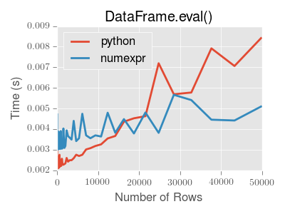

Enhancing performance#
In this part of the tutorial, we will investigate how to speed up certain
functions operating on pandas DataFrame using three different techniques:
Cython, Numba and pandas.eval(). We will see a speed improvement of ~200
when we use Cython and Numba on a test function operating row-wise on the
DataFrame. Using pandas.eval() we will speed up a sum by an order of
~2.
Note
In addition to following the steps in this tutorial, users interested in enhancing performance are highly encouraged to install the recommended dependencies for pandas. These dependencies are often not installed by default, but will offer speed improvements if present.
Cython (writing C extensions for pandas)#
For many use cases writing pandas in pure Python and NumPy is sufficient. In some computationally heavy applications however, it can be possible to achieve sizable speed-ups by offloading work to cython.
This tutorial assumes you have refactored as much as possible in Python, for example by trying to remove for-loops and making use of NumPy vectorization. It’s always worth optimising in Python first.
This tutorial walks through a “typical” process of cythonizing a slow computation. We use an example from the Cython documentation but in the context of pandas. Our final cythonized solution is around 100 times faster than the pure Python solution.
Pure Python#
We have a DataFrame to which we want to apply a function row-wise.
In [1]: df = pd.DataFrame(
...: {
...: "a": np.random.randn(1000),
...: "b": np.random.randn(1000),
...: "N": np.random.randint(100, 1000, (1000)),
...: "x": "x",
...: }
...: )
...:
In [2]: df
Out[2]:
a b N x
0 0.469112 -0.218470 585 x
1 -0.282863 -0.061645 841 x
2 -1.509059 -0.723780 251 x
3 -1.135632 0.551225 972 x
4 1.212112 -0.497767 181 x
.. ... ... ... ..
995 -1.512743 0.874737 374 x
996 0.933753 1.120790 246 x
997 -0.308013 0.198768 157 x
998 -0.079915 1.757555 977 x
999 -1.010589 -1.115680 770 x
[1000 rows x 4 columns]
Here’s the function in pure Python:
In [3]: def f(x):
...: return x * (x - 1)
...:
In [4]: def integrate_f(a, b, N):
...: s = 0
...: dx = (b - a) / N
...: for i in range(N):
...: s += f(a + i * dx)
...: return s * dx
...:
We achieve our result by using DataFrame.apply() (row-wise):
In [5]: %timeit df.apply(lambda x: integrate_f(x["a"], x["b"], x["N"]), axis=1)
93.8 ms +- 684 us per loop (mean +- std. dev. of 7 runs, 10 loops each)
But clearly this isn’t fast enough for us. Let’s take a look and see where the time is spent during this operation (limited to the most time consuming four calls) using the prun ipython magic function:
In [6]: %prun -l 4 df.apply(lambda x: integrate_f(x["a"], x["b"], x["N"]), axis=1) # noqa E999
621314 function calls (621294 primitive calls) in 0.192 seconds
Ordered by: internal time
List reduced from 223 to 4 due to restriction <4>
ncalls tottime percall cumtime percall filename:lineno(function)
1000 0.111 0.000 0.164 0.000 <ipython-input-4-c2a74e076cf0>:1(integrate_f)
552423 0.053 0.000 0.053 0.000 <ipython-input-3-c138bdd570e3>:1(f)
3000 0.005 0.000 0.020 0.000 series.py:966(__getitem__)
3000 0.003 0.000 0.010 0.000 series.py:1072(_get_value)
By far the majority of time is spend inside either integrate_f or f,
hence we’ll concentrate our efforts cythonizing these two functions.
Plain Cython#
First we’re going to need to import the Cython magic function to IPython:
In [7]: %load_ext Cython
Now, let’s simply copy our functions over to Cython as is (the suffix is here to distinguish between function versions):
In [8]: %%cython
...: def f_plain(x):
...: return x * (x - 1)
...: def integrate_f_plain(a, b, N):
...: s = 0
...: dx = (b - a) / N
...: for i in range(N):
...: s += f_plain(a + i * dx)
...: return s * dx
...:
Note
If you’re having trouble pasting the above into your ipython, you may need to be using bleeding edge IPython for paste to play well with cell magics.
In [9]: %timeit df.apply(lambda x: integrate_f_plain(x["a"], x["b"], x["N"]), axis=1)
50.6 ms +- 326 us per loop (mean +- std. dev. of 7 runs, 10 loops each)
Already this has shaved a third off, not too bad for a simple copy and paste.
Adding type#
We get another huge improvement simply by providing type information:
In [10]: %%cython
....: cdef double f_typed(double x) except? -2:
....: return x * (x - 1)
....: cpdef double integrate_f_typed(double a, double b, int N):
....: cdef int i
....: cdef double s, dx
....: s = 0
....: dx = (b - a) / N
....: for i in range(N):
....: s += f_typed(a + i * dx)
....: return s * dx
....:
In [11]: %timeit df.apply(lambda x: integrate_f_typed(x["a"], x["b"], x["N"]), axis=1)
10.3 ms +- 69.1 us per loop (mean +- std. dev. of 7 runs, 100 loops each)
Now, we’re talking! It’s now over ten times faster than the original Python implementation, and we haven’t really modified the code. Let’s have another look at what’s eating up time:
In [12]: %prun -l 4 df.apply(lambda x: integrate_f_typed(x["a"], x["b"], x["N"]), axis=1)
68891 function calls (68871 primitive calls) in 0.028 seconds
Ordered by: internal time
List reduced from 222 to 4 due to restriction <4>
ncalls tottime percall cumtime percall filename:lineno(function)
3000 0.005 0.000 0.020 0.000 series.py:966(__getitem__)
3000 0.003 0.000 0.009 0.000 series.py:1072(_get_value)
16173 0.002 0.000 0.003 0.000 {built-in method builtins.isinstance}
3000 0.002 0.000 0.003 0.000 base.py:3755(get_loc)
Using ndarray#
It’s calling series a lot! It’s creating a Series from each row, and calling get from both
the index and the series (three times for each row). Function calls are expensive
in Python, so maybe we could minimize these by cythonizing the apply part.
Note
We are now passing ndarrays into the Cython function, fortunately Cython plays very nicely with NumPy.
In [13]: %%cython
....: cimport numpy as np
....: import numpy as np
....: cdef double f_typed(double x) except? -2:
....: return x * (x - 1)
....: cpdef double integrate_f_typed(double a, double b, int N):
....: cdef int i
....: cdef double s, dx
....: s = 0
....: dx = (b - a) / N
....: for i in range(N):
....: s += f_typed(a + i * dx)
....: return s * dx
....: cpdef np.ndarray[double] apply_integrate_f(np.ndarray col_a, np.ndarray col_b,
....: np.ndarray col_N):
....: assert (col_a.dtype == np.float_
....: and col_b.dtype == np.float_ and col_N.dtype == np.int_)
....: cdef Py_ssize_t i, n = len(col_N)
....: assert (len(col_a) == len(col_b) == n)
....: cdef np.ndarray[double] res = np.empty(n)
....: for i in range(len(col_a)):
....: res[i] = integrate_f_typed(col_a[i], col_b[i], col_N[i])
....: return res
....:
The implementation is simple, it creates an array of zeros and loops over
the rows, applying our integrate_f_typed, and putting this in the zeros array.
Warning
You can not pass a Series directly as a ndarray typed parameter
to a Cython function. Instead pass the actual ndarray using the
Series.to_numpy(). The reason is that the Cython
definition is specific to an ndarray and not the passed Series.
So, do not do this:
apply_integrate_f(df["a"], df["b"], df["N"])
But rather, use Series.to_numpy() to get the underlying ndarray:
apply_integrate_f(df["a"].to_numpy(), df["b"].to_numpy(), df["N"].to_numpy())
Note
Loops like this would be extremely slow in Python, but in Cython looping over NumPy arrays is fast.
In [14]: %timeit apply_integrate_f(df["a"].to_numpy(), df["b"].to_numpy(), df["N"].to_numpy())
1.04 ms +- 1.42 us per loop (mean +- std. dev. of 7 runs, 1,000 loops each)
We’ve gotten another big improvement. Let’s check again where the time is spent:
In [15]: %prun -l 4 apply_integrate_f(df["a"].to_numpy(), df["b"].to_numpy(), df["N"].to_numpy())
85 function calls in 0.001 seconds
Ordered by: internal time
List reduced from 24 to 4 due to restriction <4>
ncalls tottime percall cumtime percall filename:lineno(function)
1 0.001 0.001 0.001 0.001 {built-in method _cython_magic_7ad580c77c493a861f5c06a1c31a77c6.apply_integrate_f}
1 0.000 0.000 0.001 0.001 {built-in method builtins.exec}
3 0.000 0.000 0.000 0.000 frame.py:3755(__getitem__)
3 0.000 0.000 0.000 0.000 base.py:428(to_numpy)
As one might expect, the majority of the time is now spent in apply_integrate_f,
so if we wanted to make anymore efficiencies we must continue to concentrate our
efforts here.
More advanced techniques#
There is still hope for improvement. Here’s an example of using some more advanced Cython techniques:
In [16]: %%cython
....: cimport cython
....: cimport numpy as np
....: import numpy as np
....: cdef np.float64_t f_typed(np.float64_t x) except? -2:
....: return x * (x - 1)
....: cpdef np.float64_t integrate_f_typed(np.float64_t a, np.float64_t b, np.int64_t N):
....: cdef np.int64_t i
....: cdef np.float64_t s = 0.0, dx
....: dx = (b - a) / N
....: for i in range(N):
....: s += f_typed(a + i * dx)
....: return s * dx
....: @cython.boundscheck(False)
....: @cython.wraparound(False)
....: cpdef np.ndarray[np.float64_t] apply_integrate_f_wrap(
....: np.ndarray[np.float64_t] col_a,
....: np.ndarray[np.float64_t] col_b,
....: np.ndarray[np.int64_t] col_N
....: ):
....: cdef np.int64_t i, n = len(col_N)
....: assert len(col_a) == len(col_b) == n
....: cdef np.ndarray[np.float64_t] res = np.empty(n, dtype=np.float64)
....: for i in range(n):
....: res[i] = integrate_f_typed(col_a[i], col_b[i], col_N[i])
....: return res
....:
In [17]: %timeit apply_integrate_f_wrap(df["a"].to_numpy(), df["b"].to_numpy(), df["N"].to_numpy())
923 us +- 18.7 us per loop (mean +- std. dev. of 7 runs, 1,000 loops each)
Even faster, with the caveat that a bug in our Cython code (an off-by-one error,
for example) might cause a segfault because memory access isn’t checked.
For more about boundscheck and wraparound, see the Cython docs on
compiler directives.
Numba (JIT compilation)#
An alternative to statically compiling Cython code is to use a dynamic just-in-time (JIT) compiler with Numba.
Numba allows you to write a pure Python function which can be JIT compiled to native machine instructions, similar in performance to C, C++ and Fortran,
by decorating your function with @jit.
Numba works by generating optimized machine code using the LLVM compiler infrastructure at import time, runtime, or statically (using the included pycc tool). Numba supports compilation of Python to run on either CPU or GPU hardware and is designed to integrate with the Python scientific software stack.
Note
The @jit compilation will add overhead to the runtime of the function, so performance benefits may not be realized especially when using small data sets.
Consider caching your function to avoid compilation overhead each time your function is run.
Numba can be used in 2 ways with pandas:
Specify the
engine="numba"keyword in select pandas methodsDefine your own Python function decorated with
@jitand pass the underlying NumPy array ofSeriesorDataFrame(usingto_numpy()) into the function
pandas Numba Engine#
If Numba is installed, one can specify engine="numba" in select pandas methods to execute the method using Numba.
Methods that support engine="numba" will also have an engine_kwargs keyword that accepts a dictionary that allows one to specify
"nogil", "nopython" and "parallel" keys with boolean values to pass into the @jit decorator.
If engine_kwargs is not specified, it defaults to {"nogil": False, "nopython": True, "parallel": False} unless otherwise specified.
In terms of performance, the first time a function is run using the Numba engine will be slow as Numba will have some function compilation overhead. However, the JIT compiled functions are cached, and subsequent calls will be fast. In general, the Numba engine is performant with a larger amount of data points (e.g. 1+ million).
In [1]: data = pd.Series(range(1_000_000)) # noqa: E225
In [2]: roll = data.rolling(10)
In [3]: def f(x):
...: return np.sum(x) + 5
# Run the first time, compilation time will affect performance
In [4]: %timeit -r 1 -n 1 roll.apply(f, engine='numba', raw=True)
1.23 s ± 0 ns per loop (mean ± std. dev. of 1 run, 1 loop each)
# Function is cached and performance will improve
In [5]: %timeit roll.apply(f, engine='numba', raw=True)
188 ms ± 1.93 ms per loop (mean ± std. dev. of 7 runs, 10 loops each)
In [6]: %timeit roll.apply(f, engine='cython', raw=True)
3.92 s ± 59 ms per loop (mean ± std. dev. of 7 runs, 1 loop each)
If your compute hardware contains multiple CPUs, the largest performance gain can be realized by setting parallel to True
to leverage more than 1 CPU. Internally, pandas leverages numba to parallelize computations over the columns of a DataFrame;
therefore, this performance benefit is only beneficial for a DataFrame with a large number of columns.
In [1]: import numba
In [2]: numba.set_num_threads(1)
In [3]: df = pd.DataFrame(np.random.randn(10_000, 100))
In [4]: roll = df.rolling(100)
In [5]: %timeit roll.mean(engine="numba", engine_kwargs={"parallel": True})
347 ms ± 26 ms per loop (mean ± std. dev. of 7 runs, 1 loop each)
In [6]: numba.set_num_threads(2)
In [7]: %timeit roll.mean(engine="numba", engine_kwargs={"parallel": True})
201 ms ± 2.97 ms per loop (mean ± std. dev. of 7 runs, 1 loop each)
Custom Function Examples#
A custom Python function decorated with @jit can be used with pandas objects by passing their NumPy array
representations with to_numpy().
import numba
@numba.jit
def f_plain(x):
return x * (x - 1)
@numba.jit
def integrate_f_numba(a, b, N):
s = 0
dx = (b - a) / N
for i in range(N):
s += f_plain(a + i * dx)
return s * dx
@numba.jit
def apply_integrate_f_numba(col_a, col_b, col_N):
n = len(col_N)
result = np.empty(n, dtype="float64")
assert len(col_a) == len(col_b) == n
for i in range(n):
result[i] = integrate_f_numba(col_a[i], col_b[i], col_N[i])
return result
def compute_numba(df):
result = apply_integrate_f_numba(
df["a"].to_numpy(), df["b"].to_numpy(), df["N"].to_numpy()
)
return pd.Series(result, index=df.index, name="result")
In [4]: %timeit compute_numba(df)
1000 loops, best of 3: 798 us per loop
In this example, using Numba was faster than Cython.
Numba can also be used to write vectorized functions that do not require the user to explicitly loop over the observations of a vector; a vectorized function will be applied to each row automatically. Consider the following example of doubling each observation:
import numba
def double_every_value_nonumba(x):
return x * 2
@numba.vectorize
def double_every_value_withnumba(x): # noqa E501
return x * 2
# Custom function without numba
In [5]: %timeit df["col1_doubled"] = df["a"].apply(double_every_value_nonumba) # noqa E501
1000 loops, best of 3: 797 us per loop
# Standard implementation (faster than a custom function)
In [6]: %timeit df["col1_doubled"] = df["a"] * 2
1000 loops, best of 3: 233 us per loop
# Custom function with numba
In [7]: %timeit df["col1_doubled"] = double_every_value_withnumba(df["a"].to_numpy())
1000 loops, best of 3: 145 us per loop
Caveats#
Numba is best at accelerating functions that apply numerical functions to NumPy
arrays. If you try to @jit a function that contains unsupported Python
or NumPy
code, compilation will revert object mode which
will mostly likely not speed up your function. If you would
prefer that Numba throw an error if it cannot compile a function in a way that
speeds up your code, pass Numba the argument
nopython=True (e.g. @jit(nopython=True)). For more on
troubleshooting Numba modes, see the Numba troubleshooting page.
Using parallel=True (e.g. @jit(parallel=True)) may result in a SIGABRT if the threading layer leads to unsafe
behavior. You can first specify a safe threading layer
before running a JIT function with parallel=True.
Generally if the you encounter a segfault (SIGSEGV) while using Numba, please report the issue
to the Numba issue tracker.
Expression evaluation via eval()#
The top-level function pandas.eval() implements expression evaluation of
Series and DataFrame objects.
Note
To benefit from using eval() you need to
install numexpr. See the recommended dependencies section for more details.
The point of using eval() for expression evaluation rather than
plain Python is two-fold: 1) large DataFrame objects are
evaluated more efficiently and 2) large arithmetic and boolean expressions are
evaluated all at once by the underlying engine (by default numexpr is used
for evaluation).
Note
You should not use eval() for simple
expressions or for expressions involving small DataFrames. In fact,
eval() is many orders of magnitude slower for
smaller expressions/objects than plain ol’ Python. A good rule of thumb is
to only use eval() when you have a
DataFrame with more than 10,000 rows.
eval() supports all arithmetic expressions supported by the
engine in addition to some extensions available only in pandas.
Note
The larger the frame and the larger the expression the more speedup you will
see from using eval().
Supported syntax#
These operations are supported by pandas.eval():
Arithmetic operations except for the left shift (
<<) and right shift (>>) operators, e.g.,df + 2 * pi / s ** 4 % 42 - the_golden_ratioComparison operations, including chained comparisons, e.g.,
2 < df < df2Boolean operations, e.g.,
df < df2 and df3 < df4 or not df_boollistandtupleliterals, e.g.,[1, 2]or(1, 2)Attribute access, e.g.,
df.aSubscript expressions, e.g.,
df[0]Simple variable evaluation, e.g.,
pd.eval("df")(this is not very useful)Math functions:
sin,cos,exp,log,expm1,log1p,sqrt,sinh,cosh,tanh,arcsin,arccos,arctan,arccosh,arcsinh,arctanh,abs,arctan2andlog10.
This Python syntax is not allowed:
Expressions
Function calls other than math functions.
is/is notoperationsifexpressionslambdaexpressionslist/set/dictcomprehensionsLiteral
dictandsetexpressionsyieldexpressionsGenerator expressions
Boolean expressions consisting of only scalar values
Statements
eval() examples#
pandas.eval() works well with expressions containing large arrays.
First let’s create a few decent-sized arrays to play with:
In [18]: nrows, ncols = 20000, 100
In [19]: df1, df2, df3, df4 = [pd.DataFrame(np.random.randn(nrows, ncols)) for _ in range(4)]
Now let’s compare adding them together using plain ol’ Python versus
eval():
In [20]: %timeit df1 + df2 + df3 + df4
16 ms +- 792 us per loop (mean +- std. dev. of 7 runs, 10 loops each)
In [21]: %timeit pd.eval("df1 + df2 + df3 + df4")
8.64 ms +- 634 us per loop (mean +- std. dev. of 7 runs, 100 loops each)
Now let’s do the same thing but with comparisons:
In [22]: %timeit (df1 > 0) & (df2 > 0) & (df3 > 0) & (df4 > 0)
16.7 ms +- 179 us per loop (mean +- std. dev. of 7 runs, 100 loops each)
In [23]: %timeit pd.eval("(df1 > 0) & (df2 > 0) & (df3 > 0) & (df4 > 0)")
32.2 ms +- 1.6 ms per loop (mean +- std. dev. of 7 runs, 10 loops each)
eval() also works with unaligned pandas objects:
In [24]: s = pd.Series(np.random.randn(50))
In [25]: %timeit df1 + df2 + df3 + df4 + s
25.5 ms +- 242 us per loop (mean +- std. dev. of 7 runs, 10 loops each)
In [26]: %timeit pd.eval("df1 + df2 + df3 + df4 + s")
11.5 ms +- 312 us per loop (mean +- std. dev. of 7 runs, 100 loops each)
Note
Operations such as
1 and 2 # would parse to 1 & 2, but should evaluate to 2 3 or 4 # would parse to 3 | 4, but should evaluate to 3 ~1 # this is okay, but slower when using eval
should be performed in Python. An exception will be raised if you try to
perform any boolean/bitwise operations with scalar operands that are not
of type bool or np.bool_. Again, you should perform these kinds of
operations in plain Python.
The DataFrame.eval() method#
In addition to the top level pandas.eval() function you can also
evaluate an expression in the “context” of a DataFrame.
In [27]: df = pd.DataFrame(np.random.randn(5, 2), columns=["a", "b"])
In [28]: df.eval("a + b")
Out[28]:
0 -0.246747
1 0.867786
2 -1.626063
3 -1.134978
4 -1.027798
dtype: float64
Any expression that is a valid pandas.eval() expression is also a valid
DataFrame.eval() expression, with the added benefit that you don’t have to
prefix the name of the DataFrame to the column(s) you’re
interested in evaluating.
In addition, you can perform assignment of columns within an expression. This allows for formulaic evaluation. The assignment target can be a new column name or an existing column name, and it must be a valid Python identifier.
The inplace keyword determines whether this assignment will performed
on the original DataFrame or return a copy with the new column.
In [29]: df = pd.DataFrame(dict(a=range(5), b=range(5, 10)))
In [30]: df.eval("c = a + b", inplace=True)
In [31]: df.eval("d = a + b + c", inplace=True)
In [32]: df.eval("a = 1", inplace=True)
In [33]: df
Out[33]:
a b c d
0 1 5 5 10
1 1 6 7 14
2 1 7 9 18
3 1 8 11 22
4 1 9 13 26
When inplace is set to False, the default, a copy of the DataFrame with the
new or modified columns is returned and the original frame is unchanged.
In [34]: df
Out[34]:
a b c d
0 1 5 5 10
1 1 6 7 14
2 1 7 9 18
3 1 8 11 22
4 1 9 13 26
In [35]: df.eval("e = a - c", inplace=False)
Out[35]:
a b c d e
0 1 5 5 10 -4
1 1 6 7 14 -6
2 1 7 9 18 -8
3 1 8 11 22 -10
4 1 9 13 26 -12
In [36]: df
Out[36]:
a b c d
0 1 5 5 10
1 1 6 7 14
2 1 7 9 18
3 1 8 11 22
4 1 9 13 26
As a convenience, multiple assignments can be performed by using a multi-line string.
In [37]: df.eval(
....: """
....: c = a + b
....: d = a + b + c
....: a = 1""",
....: inplace=False,
....: )
....:
Out[37]:
a b c d
0 1 5 6 12
1 1 6 7 14
2 1 7 8 16
3 1 8 9 18
4 1 9 10 20
The equivalent in standard Python would be
In [38]: df = pd.DataFrame(dict(a=range(5), b=range(5, 10)))
In [39]: df["c"] = df["a"] + df["b"]
In [40]: df["d"] = df["a"] + df["b"] + df["c"]
In [41]: df["a"] = 1
In [42]: df
Out[42]:
a b c d
0 1 5 5 10
1 1 6 7 14
2 1 7 9 18
3 1 8 11 22
4 1 9 13 26
The DataFrame.query method has a inplace keyword which determines
whether the query modifies the original frame.
In [43]: df = pd.DataFrame(dict(a=range(5), b=range(5, 10)))
In [44]: df.query("a > 2")
Out[44]:
a b
3 3 8
4 4 9
In [45]: df.query("a > 2", inplace=True)
In [46]: df
Out[46]:
a b
3 3 8
4 4 9
Local variables#
You must explicitly reference any local variable that you want to use in an
expression by placing the @ character in front of the name. For example,
In [47]: df = pd.DataFrame(np.random.randn(5, 2), columns=list("ab"))
In [48]: newcol = np.random.randn(len(df))
In [49]: df.eval("b + @newcol")
Out[49]:
0 -0.173926
1 2.493083
2 -0.881831
3 -0.691045
4 1.334703
dtype: float64
In [50]: df.query("b < @newcol")
Out[50]:
a b
0 0.863987 -0.115998
2 -2.621419 -1.297879
If you don’t prefix the local variable with @, pandas will raise an
exception telling you the variable is undefined.
When using DataFrame.eval() and DataFrame.query(), this allows you
to have a local variable and a DataFrame column with the same
name in an expression.
In [51]: a = np.random.randn()
In [52]: df.query("@a < a")
Out[52]:
a b
0 0.863987 -0.115998
In [53]: df.loc[a < df["a"]] # same as the previous expression
Out[53]:
a b
0 0.863987 -0.115998
With pandas.eval() you cannot use the @ prefix at all, because it
isn’t defined in that context. pandas will let you know this if you try to
use @ in a top-level call to pandas.eval(). For example,
In [54]: a, b = 1, 2
In [55]: pd.eval("@a + b")
Traceback (most recent call last):
File ~/micromamba/envs/test/lib/python3.8/site-packages/IPython/core/interactiveshell.py:3378 in run_code
exec(code_obj, self.user_global_ns, self.user_ns)
Cell In [55], line 1
pd.eval("@a + b")
File ~/work/pandas/pandas/pandas/core/computation/eval.py:342 in eval
_check_for_locals(expr, level, parser)
File ~/work/pandas/pandas/pandas/core/computation/eval.py:167 in _check_for_locals
raise SyntaxError(msg)
File <string>
SyntaxError: The '@' prefix is not allowed in top-level eval calls.
please refer to your variables by name without the '@' prefix.
In this case, you should simply refer to the variables like you would in standard Python.
In [56]: pd.eval("a + b")
Out[56]: 3
pandas.eval() parsers#
There are two different parsers and two different engines you can use as the backend.
The default 'pandas' parser allows a more intuitive syntax for expressing
query-like operations (comparisons, conjunctions and disjunctions). In
particular, the precedence of the & and | operators is made equal to
the precedence of the corresponding boolean operations and and or.
For example, the above conjunction can be written without parentheses.
Alternatively, you can use the 'python' parser to enforce strict Python
semantics.
In [57]: expr = "(df1 > 0) & (df2 > 0) & (df3 > 0) & (df4 > 0)"
In [58]: x = pd.eval(expr, parser="python")
In [59]: expr_no_parens = "df1 > 0 & df2 > 0 & df3 > 0 & df4 > 0"
In [60]: y = pd.eval(expr_no_parens, parser="pandas")
In [61]: np.all(x == y)
Out[61]: True
The same expression can be “anded” together with the word and as
well:
In [62]: expr = "(df1 > 0) & (df2 > 0) & (df3 > 0) & (df4 > 0)"
In [63]: x = pd.eval(expr, parser="python")
In [64]: expr_with_ands = "df1 > 0 and df2 > 0 and df3 > 0 and df4 > 0"
In [65]: y = pd.eval(expr_with_ands, parser="pandas")
In [66]: np.all(x == y)
Out[66]: True
The and and or operators here have the same precedence that they would
in vanilla Python.
pandas.eval() backends#
There’s also the option to make eval() operate identical to plain
ol’ Python.
Note
Using the 'python' engine is generally not useful, except for testing
other evaluation engines against it. You will achieve no performance
benefits using eval() with engine='python' and in fact may
incur a performance hit.
You can see this by using pandas.eval() with the 'python' engine. It
is a bit slower (not by much) than evaluating the same expression in Python
In [67]: %timeit df1 + df2 + df3 + df4
16.3 ms +- 313 us per loop (mean +- std. dev. of 7 runs, 100 loops each)
In [68]: %timeit pd.eval("df1 + df2 + df3 + df4", engine="python")
17.1 ms +- 337 us per loop (mean +- std. dev. of 7 runs, 100 loops each)
pandas.eval() performance#
eval() is intended to speed up certain kinds of operations. In
particular, those operations involving complex expressions with large
DataFrame/Series objects should see a
significant performance benefit. Here is a plot showing the running time of
pandas.eval() as function of the size of the frame involved in the
computation. The two lines are two different engines.
Note
Operations with smallish objects (around 15k-20k rows) are faster using plain Python:

This plot was created using a DataFrame with 3 columns each containing
floating point values generated using numpy.random.randn().
Technical minutia regarding expression evaluation#
Expressions that would result in an object dtype or involve datetime operations
(because of NaT) must be evaluated in Python space. The main reason for
this behavior is to maintain backwards compatibility with versions of NumPy <
1.7. In those versions of NumPy a call to ndarray.astype(str) will
truncate any strings that are more than 60 characters in length. Second, we
can’t pass object arrays to numexpr thus string comparisons must be
evaluated in Python space.
The upshot is that this only applies to object-dtype expressions. So, if you have an expression–for example
In [69]: df = pd.DataFrame(
....: {"strings": np.repeat(list("cba"), 3), "nums": np.repeat(range(3), 3)}
....: )
....:
In [70]: df
Out[70]:
strings nums
0 c 0
1 c 0
2 c 0
3 b 1
4 b 1
5 b 1
6 a 2
7 a 2
8 a 2
In [71]: df.query("strings == 'a' and nums == 1")
Out[71]:
Empty DataFrame
Columns: [strings, nums]
Index: []
the numeric part of the comparison (nums == 1) will be evaluated by
numexpr.
In general, DataFrame.query()/pandas.eval() will
evaluate the subexpressions that can be evaluated by numexpr and those
that must be evaluated in Python space transparently to the user. This is done
by inferring the result type of an expression from its arguments and operators.